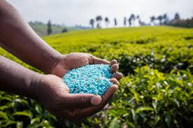
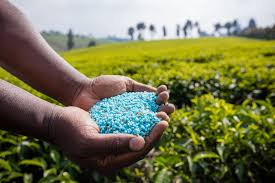

Guidance

Mr.S.D.Jondhale
Mr.S.D.Jondhale
tambe omkar

Shelke Vinay
Darekar Sainath
Sakhare Samarth
vrdfdhftr
Plantation and soil protection are essential practices for maintaining ecological balance, enhancing biodiversity, combating climate change, and preserving land productivity. They play a critical role in ensuring sustainable development, particularly in rural and agricultural areas.
Plantation refers to the process of planting trees, shrubs, and vegetation in order to improve environmental quality and land stability.
Plantation is crucial for maintaining ecological balance and providing oxygen.
Soil protection is essential for sustainable agriculture and environmental health.
Plantation is the process of planting trees and other vegetation to improve the environment and promote sustainability. It plays a vital role in reducing air pollution, preventing soil erosion, conserving water, enhancing biodiversity, and combating climate change. By planting trees in areas like schools, roadsides, parks, and degraded lands, communities can improve air quality, support wildlife, and maintain ecological balance. Native and fast-growing trees such as neem, peepal, bamboo, and gulmohar are often chosen for their environmental benefits. Plantation activities not only beautify surroundings but also raise awareness about environmental protection and encourage collective responsibility for a greener future.
Soil protection refers to the conservation and management of soil to prevent its degradation and ensure its long-term health and fertility. Healthy soil is essential for agriculture, plant growth, water filtration, and supporting biodiversity. However, soil faces threats such as erosion, overuse of chemical fertilizers, deforestation, and pollution. Protecting soil involves practices like afforestation, using organic compost, crop rotation, mulching, building check dams, and avoiding overgrazing. These methods help retain nutrients, prevent erosion, and maintain the natural balance of the soil. By protecting soil, we safeguard food security, support ecosystems, and contribute to a more sustainable and resilient environment.
Soil testing is the process of analyzing soil samples to determine their nutrient content, pH level, moisture, and other characteristics important for plant growth. It helps farmers and gardeners understand the health and fertility of the soil, allowing them to make informed decisions about which crops to grow and what type of fertilizers or treatments are needed. Soil testing can detect deficiencies in nutrients like nitrogen, phosphorus, and potassium, and also identify problems such as soil acidity or salinity. Regular soil testing improves crop yield, prevents overuse of chemicals, and promotes sustainable farming by maintaining soil quality and reducing environmental harm
Natural fertilizers, also known as organic fertilizers, are substances made from natural sources that provide essential nutrients to plants and improve soil health without harming the environment. Common examples include compost, cow dung, green manure, bone meal, neem cake, and vermicompost. These fertilizers release nutrients slowly, enrich the soil with organic matter, and support beneficial microorganisms. Unlike chemical fertilizers, natural fertilizers do not cause pollution or damage soil structure. They help retain moisture, improve soil fertility, and promote sustainable farming practices. Using natural fertilizers is a safe and eco-friendly way to grow healthy crops while protecting the environment.
 

Chemical fertilizers are synthetic substances used to supply nutrients to crops, but their excessive or improper use can have several harmful effects on the environment and human health. Over time, they can degrade soil quality by reducing natural fertility and killing beneficial microorganisms. Chemical fertilizers often lead to soil acidity, water pollution (due to runoff into rivers and lakes), and groundwater contamination, which harms aquatic life and makes water unsafe for drinking. They also contribute to air pollution and greenhouse gas emissions. In humans, exposure to contaminated food or water can lead to serious health issues. Therefore, while chemical fertilizers can boost crop yields temporarily, their long-term use can damage ecosystems and reduce sustainable agricultural productivity.


We invite you to be a part of our community focused on plantation and soil protection.
Click here to join our community!